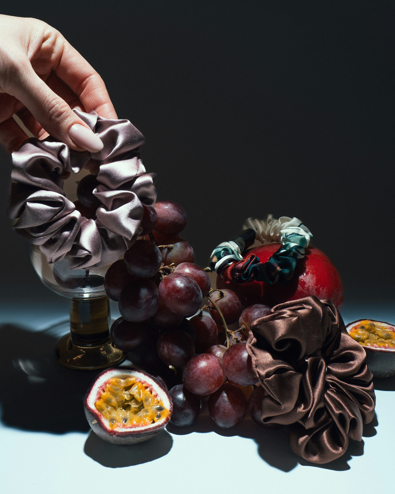
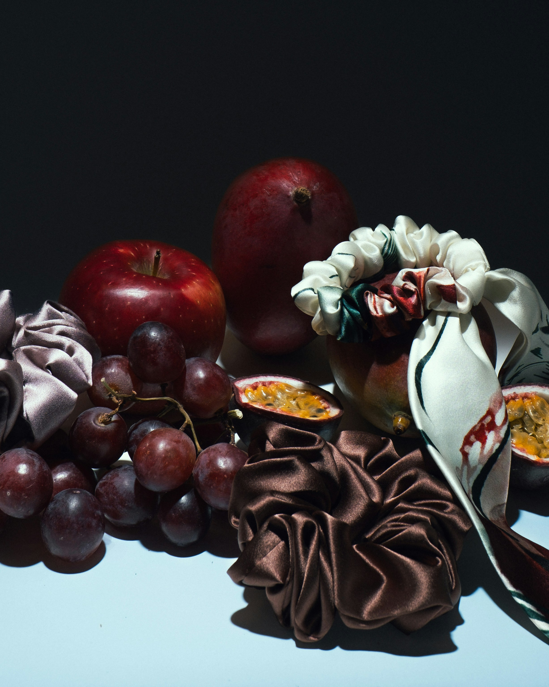
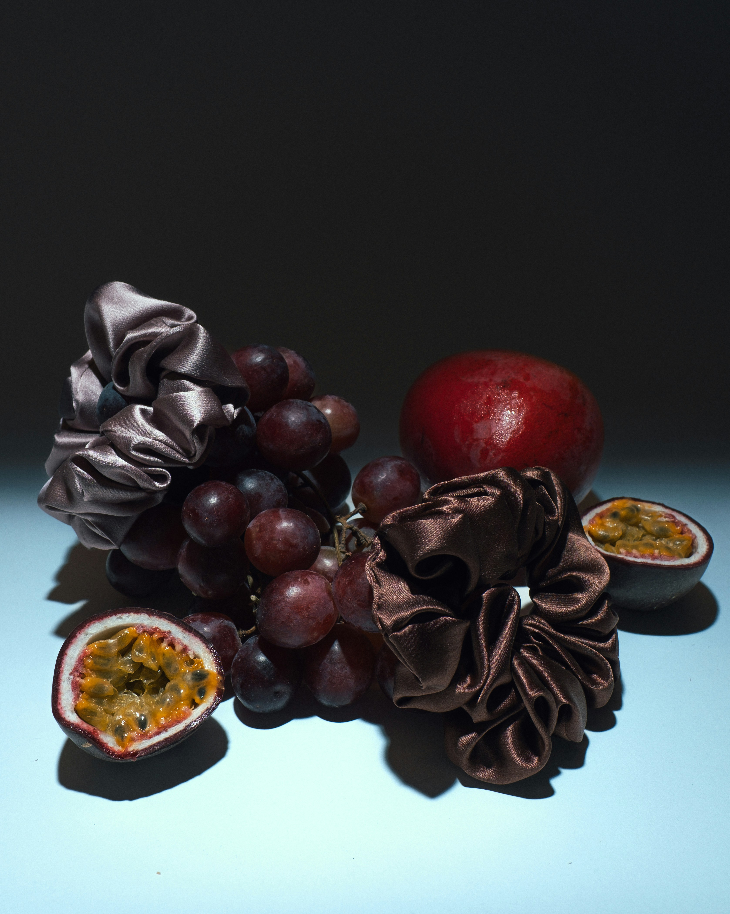

Products
- Scrunchies
- small
- medium
- large
- Pillowcases
- queen
- king
- Sleep Masks
Types of Silk
- Mulberry Silk
- Peace Silk (vegan)
- Exotic Silks

One of a kind silk accessories made from upcycled silk scarves, ties, and garments


